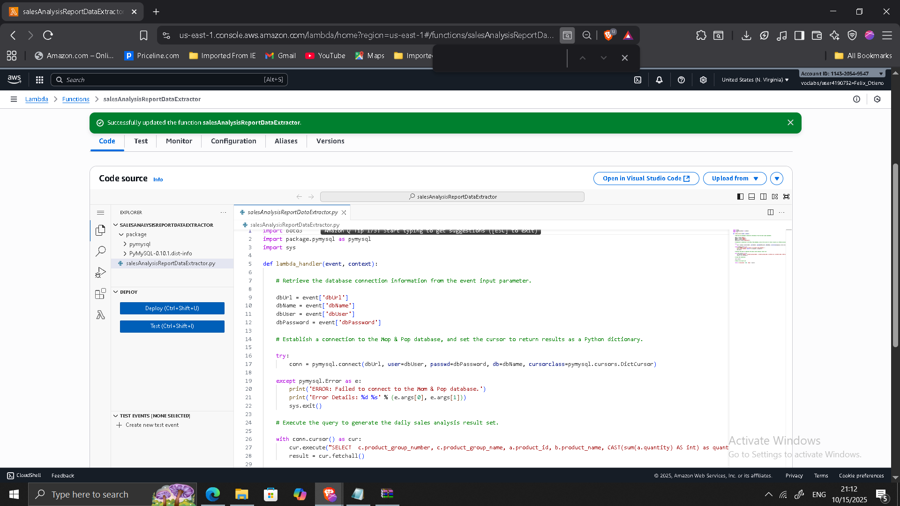
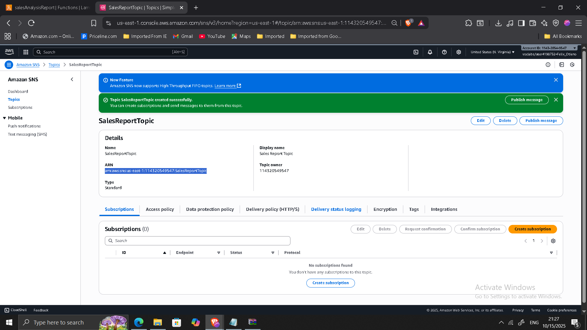
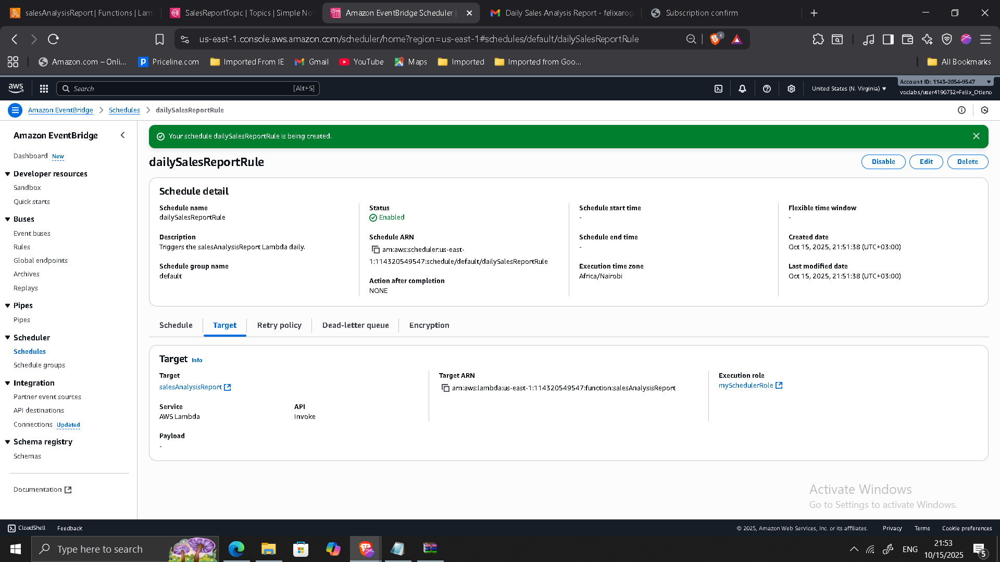
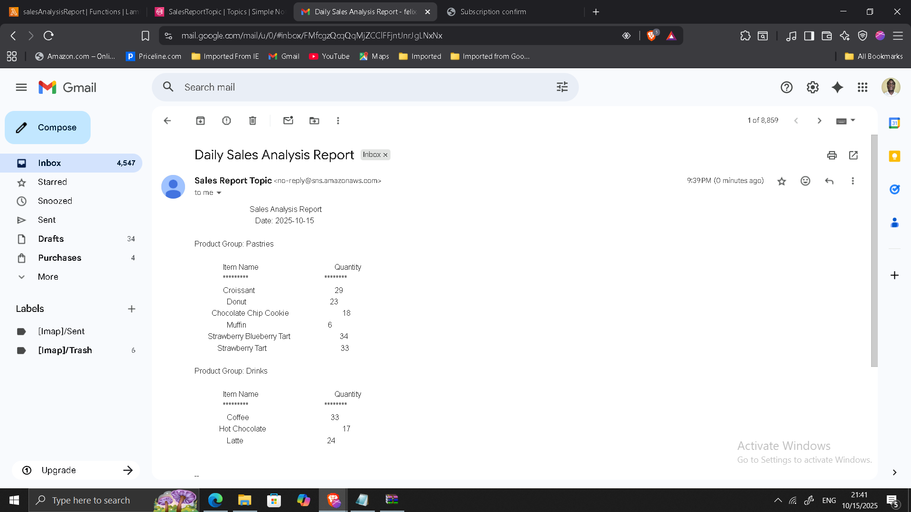

Designing a Serverless Event-Driven Reporting Architecture on AWS
Project: Serverless Reporting Architecture for Business Automation
Timeline: October 2025
Role: Solutions Architect (Serverless & Event-Driven Design)
Skills: AWS Lambda, Amazon SNS, Amazon EventBridge, Amazon RDS, VPC Configuration, IAM Roles, CloudWatch, Serverless Architecture
Executive Summary
Designed and implemented a fully serverless, event-driven reporting system to replace a performance-heavy cron job running on an EC2 web server.
The modernization introduced:
- AWS Lambda for on-demand execution
- Secure Lambda-to-RDS connectivity within a VPC
- Amazon SNS for report distribution
- Amazon EventBridge for scheduled automation
- CloudWatch for observability
The solution decouples reporting workloads from the production application, reduces operational overhead, and aligns with modern serverless and cost-optimized architecture principles.
Business Context
The café previously relied on a scheduled cron job hosted on an EC2 web server to generate daily sales reports. This approach introduced several challenges:
- Resource contention with production workloads
- Continuous EC2 compute cost regardless of report activity
- Operational maintenance overhead
- Tight coupling between reporting and web tier
The goal of the modernization was to:
- Offload non-critical reporting tasks
- Reduce infrastructure cost through event-driven compute
- Improve scalability and resilience
- Automate report distribution
Architecture Overview
The final architecture consists of:
- Lambda Function 1: Data Extractor
- Runs inside VPC
- Connects securely to RDS database
- Lambda Function 2: Sales Report Generator
- Processes extracted data
- Publishes report to SNS
- Amazon SNS
- Distributes daily report via email
- Amazon EventBridge
- Triggers daily report generation
- Amazon RDS
- Source of transactional sales data

Phase 1: VPC-Integrated Lambda for Secure Data Access
Created a security group LambdaSG and configured RDS inbound rules to allow MySQL access from Lambda.
Configured Lambda:
- Runtime: Python 3.11
- VPC: Private subnets (Lab VPC)
- Security Group: LambdaSG
- Timeout: 30 seconds
- Memory: 128 MB
This ensured secure private connectivity to the database.

Phase 2: Report Generation Lambda
Created a second Lambda function responsible for:
- Processing sales data
- Generating formatted report
- Publishing results to SNS
Configured environment variable:
topicARN = <SNS Topic ARN>

Phase 3: SNS Topic for Report Distribution
Created SNS topic:
- Name: SalesReportTopic
- Display name: Sales Report Topic
Configured email subscription and verified endpoint confirmation.


Phase 4: EventBridge Scheduled Automation
Created EventBridge rule with:
- Daily cron expression (UTC)
- Target: salesAnalysisReport Lambda
- IAM Role: mySchedulerRole
Enabled rule to automate daily execution.

Validation & Testing
Tested architecture by:
- Manually invoking Lambda function
- Verifying successful execution in CloudWatch logs
- Confirming receipt of report email
- Validating RDS connectivity from Lambda
- Confirming scheduled rule activation



Architectural Improvements Achieved
Cost Optimization
- Eliminated persistent EC2 cron job
- Pay-per-invocation compute model
- Reduced idle infrastructure cost
Decoupled Architecture
- Reporting workload isolated from production environment
- Reduced application server resource contention
Improved Scalability
- Lambda scales automatically
- No manual infrastructure scaling required
Enhanced Security
- Private VPC Lambda integration
- IAM role-based access
- No exposed database endpoints
Operational Simplicity
- Fully managed AWS services
- Built-in logging via CloudWatch
- Automated scheduling with EventBridge
Troubleshooting & Operational Considerations
Resolved common serverless deployment challenges:
- Database connectivity failures due to security group misconfiguration
- Timeout adjustments for database queries
- SNS email subscription verification issues
Monitoring and logs validated correct system behavior.
Architectural Impact
The system transitioned from:
EC2-based cron reporting
to
Fully serverless, event-driven automation
Key benefits:
- Lower operational overhead
- Reduced cost
- Improved performance isolation
- Automated reporting workflow
- Cloud-native scalability
This project demonstrates hands-on experience designing serverless architectures, integrating Lambda within VPC environments, and building automated event-driven systems — key capabilities for modern enterprise cloud environments.